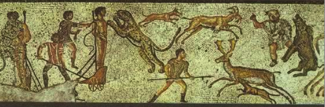

Ad Bestias
By a fall of the dice, I’ve been living a few blocks from the Colosseum for almost a year now. The Colosseum is the backdrop on my walk to the grocery store, it towers over me on the way to the metro and I watch tourists gaping up at it while I pass in the bus. The Colosseum is the most touristed place in Rome, maybe in Italy. Perhaps it’s too obvious, but I’m going to say it: that old building is fascinating.
A building, sure, that has withstood Imperial Rome, earthquakes, fires, the sacks of Visigoths, the decline of Rome, the looting and quarrying, the Christians, the Catholics and now, the tourists. A building of symbols that seems as varied as the centuries it has stood through, starting with the grandeur of Rome—the Colosseum was built in 10 years!—and Rome’s attraction to the bloodiest spectator sport in history.
In A Day in the Life of Ancient Rome, Alberto Angela compares the gladiatorial games to our movies, TV shows and video games. Perhaps sadism is closely linked to human nature, especially on the male side. Perhaps the ability to murder is just another part of our humanity; perhaps murder provides an illusion of control over the natural world, I don’t know. I shut my eyes, turn my face, plug my ears when I know blood is coming: I don’t like it. The Colosseum was built for the gladiatorial games and the gladiators, mostly prisoners and slaves, were ironically treated like soccer stars, loved alike by men, women and children.
But more disturbing to me than pitting man against man was the pitting of man against beast or beast against beast, or set the beast to eat the man. The venetio was the staged hunt and damnatio ad bestias was public execution.

Damnatio ad bestias and venatio in a Roman mosaic
The beasts were the rare and beautiful creatures which the Romans discovered in the far empire of North Africa: lions, leopards, panthers, giraffes, elephants, crocodiles, hyenas, tigers, rhinos, hippopotamus. The hunters were skilled. Caesar staged a venatio with 500 lions and one of 500 men against 20 elephants, among others. In 4 days, the games of Pompey took the lives of 400 panthers. In the 100 days of games for the inauguration of the Colosseum by Titus, 9000 animals were slain. It’s too depressing to wonder how many people.
The executions were simple or elaborate. A criminal with his hands tied was pushed towards an angered lion, the lion jumps, his white teeth tear into the man, a slow and atrocious death. Or sometimes those in charge of organizing the games and executions would provide scenery and the story of a familiar myth to better entertain the audience: the fall of Icarus, the torture of Ixion, of Orpheus singing to the wild beasts, of the fire of Prometheus or the coupling of the Queen of Pasiphae with the bull of Poseidon.
Angela writes: The gushing blood in Roman mosaics indicates that these were indeed violent spectacles. It’s almost too easy for me to separate that enormous building down the road with these horrible shows. I would rather think about its architecture and how the audience once flowed through the tiers and the cavea. But the savagery that happened there is the savagery of history, of battles, of conquests, an unescapable aspect of human nature.
· · · · · · · · · · · · · · · · · · · ·